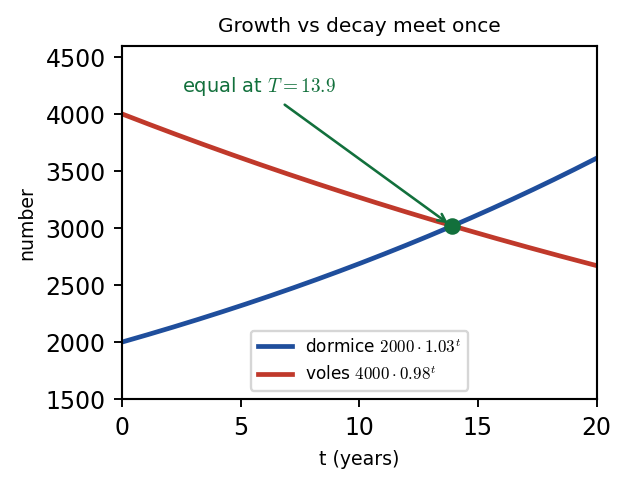

Harry → Phuc • 10 July 2026 tutorial
P2 WMA12/01 — May 2024 — Q10Q10 · Geometric population models (dormice & voles)

Dormice model: \(D=2000\times1.03^{t}\) (increasing). Voles model: \(V=4000\times0.98^{t}\) (decreasing). They intersect at \(t=T\approx13.9\) when both populations are equal.
Part (a) · Dormice after 6 years[2] · worked in lesson
Hide workingStrategy
\(t=0\) is the start (2000 dormice). Each year the population multiplies by 1.03, so after \(t\) years there are \(2000\times1.03^{t}\). Write out a few terms first to avoid \(n\) vs \(t\) confusion.
Working · write out terms
\(t=0:\; 2000\). \(t=1:\; 2000\times1.03\). \(t=6:\; 2000\times1.03^{6}\).
Substitute and calculate
\[ 2000\times1.03^{6}=2000\times1.19405\ldots=2388.10\ldots \]
Result
\( \approx 2390 \) (to 3 s.f.)
Sense check
2390 is sensible from a start of 2000 with 3% growth. 239 would be nonsense (too small). Round to
3 s.f., not 3 d.p.
Phuc's slips (recorded): Phuc first used \(1.03^{7-1}\) (\(n\)-vs-\(t\) confusion) and then rounded to 3 d.p. (2388.10) instead of 3 s.f. Harry: "\(t\) years after the start" means exponent \(t\). Write out a few terms first. Answer to 3 s.f., not 3 d.p.
Exam tip (Harry): For "wordy" sequence questions, write out a few terms first, then decide sum vs \(n\)th term vs a single term. Mind \(n\) vs \(t\) indexing.
Part (b) · Find \(N=ab^{t}\) for the voles model[3] · setup only (lesson did not complete)
Carry-in\(N=ab^{t}\); \(t=4:\,N=3690\); \(t=7:\,N=3470\). Solve for \(a\) and \(b\).
Setup only in the lesson. The recording reached the setup (\(t=4,\ N=3690\)) but did not complete the solution. The working below is mark-scheme reference.
Hide workingStrategy
Substitute both data points into \(N=ab^{t}\) to get two equations, divide them to find \(b\), then back-substitute to find \(a\).
Working · set up two equations
\[ 3690=ab^{4},\qquad 3470=ab^{7} \]
Working · divide to find \(b\)
\[ \frac{3470}{3690}=\frac{ab^{7}}{ab^{4}}=b^{3} \;\Rightarrow\; b^{3}=0.9403\ldots \;\Rightarrow\; b=\sqrt[3]{0.9403\ldots}=0.9797\ldots \]
Working · find \(a\)
\[ a=\frac{3690}{b^{4}}=\frac{3690}{0.9797\ldots^{4}}=\frac{3690}{0.9218\ldots}=4002.5\ldots\approx 4000 \]
Result
\( N=4000\times0.98^{t} \) (\(a=4000,\ b=0.98\) to 2 s.f.)
Sense check
The voles population is
decreasing (\(b<1\)), which matches 3470 < 3690. \(a\approx4000\) is the initial population at \(t=0\).
Model corrected from video ledger: The Gemini ledger guessed a voles model "\(N=A+B(1.2)^{T}\)". The official model is geometric, \(N=ab^{t}\), with \(a\approx4000,\ b\approx0.98\) (MS).
Part (c) · Find \(T\) when dormice = voles[3] · not reached (video ends)
Carry-inDormice: \(D=2000\times1.03^{t}\). Voles: \(V=4000\times0.98^{t}\). Find \(T\) when \(D=V\).
Not reached in the lesson. The video ends during the voles setup. The working below is mark-scheme reference.
Hide workingStrategy
Set \(D=V\) and solve for \(T\) using logarithms.
Working · set equal
\[ 2000\times1.03^{T}=4000\times0.98^{T} \;\Rightarrow\; \frac{1.03^{T}}{0.98^{T}}=\frac{4000}{2000}=2 \]\[ \left(\frac{1.03}{0.98}\right)^{T}=2 \]
Working · take logs
\[ T\log\!\left(\frac{1.03}{0.98}\right)=\log 2 \;\Rightarrow\; T=\frac{\log 2}{\log(1.03/0.98)} \]
Working · calculate
\[ T=\frac{\log 2}{\log(1.05102\ldots)}=\frac{0.30103}{0.02162\ldots}=13.92\ldots \]
Result
\( T=13.9 \) (to 1 d.p.)
Sense check
At \(T=13.9\): \(D=2000\times1.03^{13.9}\approx 3047\) and \(V=4000\times0.98^{13.9}\approx 3047\) — they match ✓.